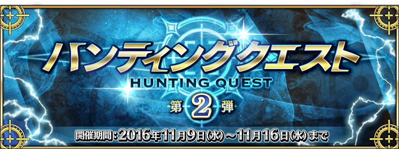
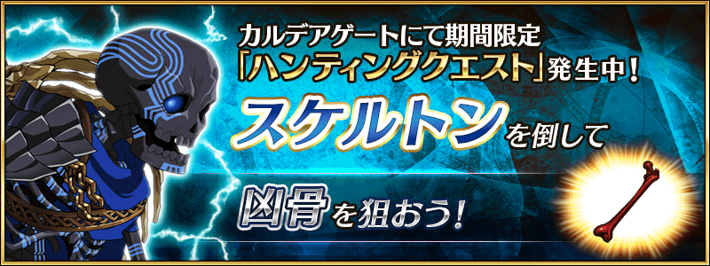
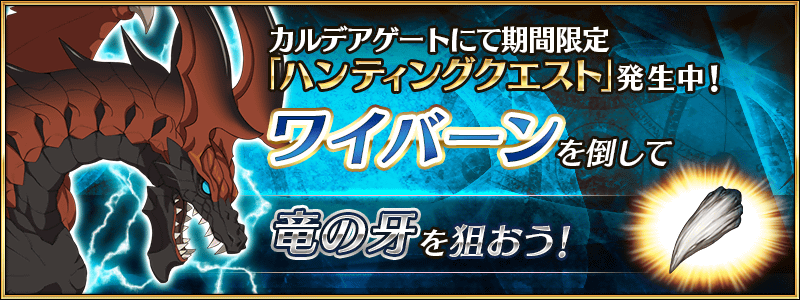
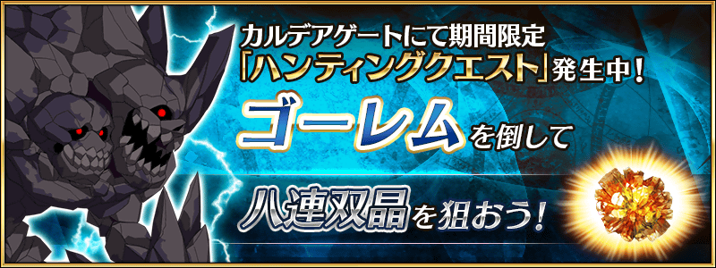
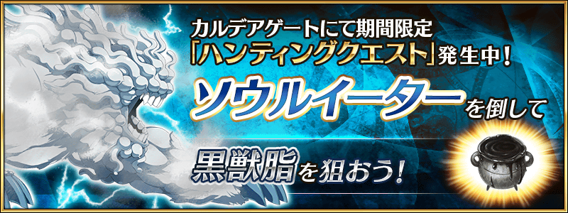
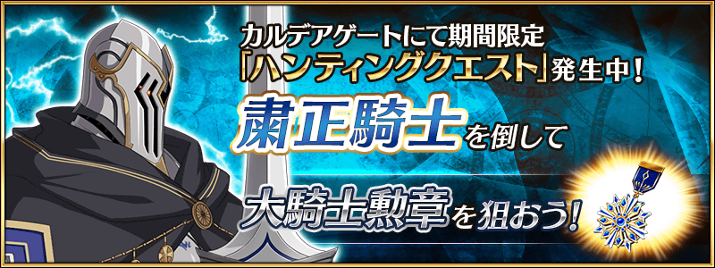
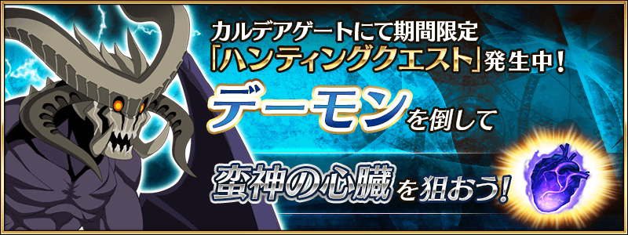

◆活動舉辦◆
2016年11月9日(三) 16:00～11月16日(三) 12:59
◆活動概要◆
容易取得特定的技能強化＆靈基再臨素材高難易度關卡，「狩獵關卡」！
活動期間中，合計6種類敵人對象的狩獵關卡依序在迦勒底之門出現。
關卡有3階段難易度的設定，在各自的期間內皆能無數次挑戰。
另外，能獲得魔力稜鏡(マナプリズム)做為關卡通過報酬。
挑戰關卡以獲得技能強化＆靈基再臨素材做為目標吧！
◆参加條件◆
只有通過教學的Master才能參加
11月9日(三) 16:00～11月10日(四) 22:59

11月10日(四) 23:00～11月11日(五) 22:59

11月11日(五) 23:00～11月12日(六) 22:59

11月12日(六) 23:00～11月13日(日) 22:59

11月13日(日) 23:00～11月14日(一) 22:59

11月14日(一) 23:00～11月16日(三) 12:59
